2.5 {ggplot2} Paketi ile Görselleştirme
{ggplot2}verilerin görselleştirilmesinde grafiklerin grameri (grammar of graphics) yaklaşımını benimser.Hadley Wickham tarafından geliştirilmiş bir R kütüphanesi olan
{ggplot2}Tidyverse meta-paketinin bir parçasıdır. Dolayısıylalibrary(tidyverse)komutuyla otomatik olarak aktif hale gelir.Eğer diğer bileşenlerini istemiyorsak
{ggplot2}paketini bağımsız olarak da çağırabiliriz:
{ggplot2}bir grafiği, veri, geometrik şekiller, renkler, haritalama, istatistik, konum, koordinat sistemi ve fasetlerin katmanlar halinde kullanılmasıyla oluşturur.Tipik bir grafik için şablon aşağıdaki gibi yazılabilir:
ggplot(data = <DATA>) +
<GEOM_FUNCTION>(
mapping = aes(<MAPPINGS>),
stat = <STAT>,
position = <POSITION>
) +
<COORDINATE_FUNCTION> +
<FACET_FUNCTION>ggplot2ile ilgili temel kaynaklar:
2.5.1 Bir grafiğin katmanları
{ggplot2}bir istatistiksel grafiği katmanlar halinde oluşturur.Paketteki temel fonksiyonu,
ggplot(), boş olarak çalıştırdığımızda geometrik nesneler ve renk, şekil ve büyüklük gibi estetik bileşenlerle dolduracağımız bir kanvas elde ederiz:

Grafiği oluşturmak için veri setimizi, ne tür grafik istediğimizi ve diğer tüm detayları bildirmemiz gerekir.
Örnek olarak
gapminderveri setinde yaşam beklentisi ile kişi başına gelir arasındaki ilişkiyi görselleştirelim:

Grafiğin eksenleri belirlendi. Ancak grafiğin türünün ne olduğu belirtilmediği için
ggplot()boş bir grafik çizdi.{ggplot2}jargonundageomismi verilen grafik türlerinin (ya da geometrik şekillerin) eklenmesiyle grafik en yalın haliyle tamamlanır:

- Grafiği aşağıdaki komut dizisiyle de çizebilirdik:

- Grafiği bir nesne ismi tanımlayarak daha sonra tekrar kullanabiliriz. Örneğin
- Grafik çıktı olarak üretilmedi. Bunun için

- Sadece veri ve estetik kısmını tanımlayıp geometrik nesne bilgisi daha sonra da ekleyebiliriz:
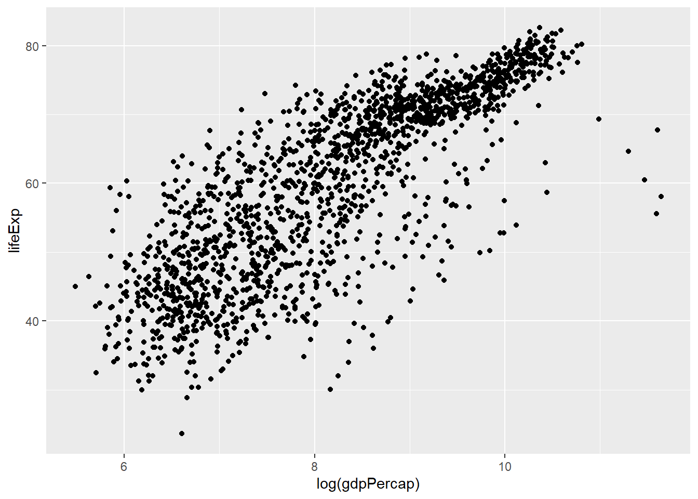
2.5.2 Renk, şekil, ve büyüklük
Grafiğimize renkleri, şekilleri, ve büyüklükleri kullanarak başka bir değişkenin bilgisini ekleyebiliriz. Renk ve şekiller kategorik değişkenler (örneğin bir ülkenin bulunduğu kıta), büyüklük ise sürekli değişkenler için daha uygundur (örneğin bir ülkenin nüfusu).
gapminderveri setinde kişi başına GDP ve yaşam beklentisi arasındaki serpilme çiziminde ülkenin bulunduğu kıta bilgisini renklerle görselleştirelim:
library(gapminder)
ggplot(gapminder,
aes(x = log(gdpPercap), y = lifeExp, color = continent)) +
geom_point()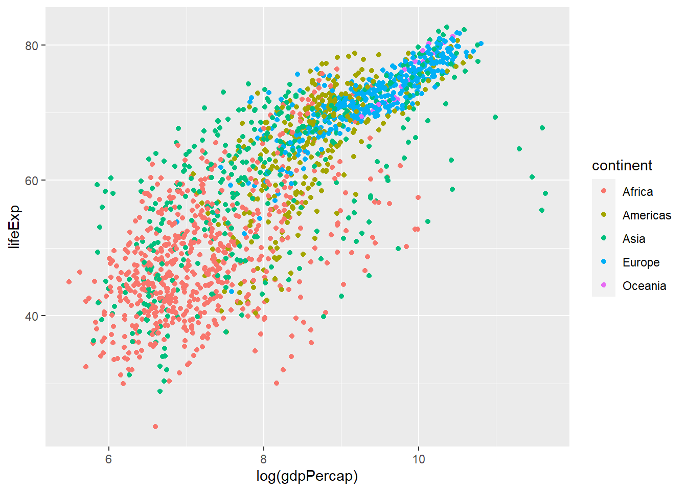
- Renk estetiği
geom_point()içinde de tanımlanabilir:
- Kategorik bir değişkene ilişkin bilgi renkler yerine şekiller aracılığı ile de gösterilebilir. Bunun için
aes()içindeshape =değişkeninin tanımlanması yeterli olur:
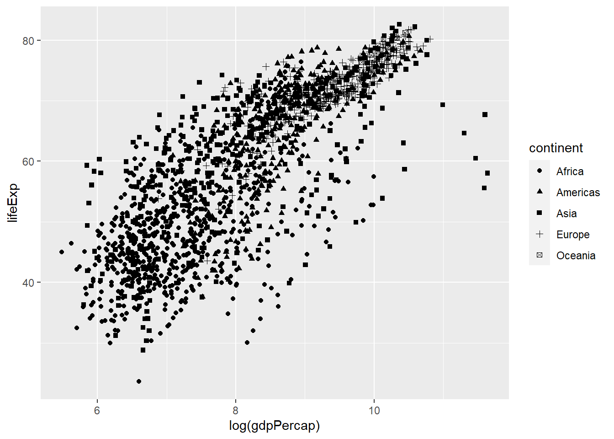
- Benzer şekilde ülkelerin nüfus bilgisini
sizeestetik bileşenini kullanarak tanımlayabiliriz:
# sadece 2007 yılı
gapminder |> filter(year==2007) |>
ggplot(aes(gdpPercap, lifeExp, size = pop)) +
geom_point(alpha = 0.5) 
Burada geom_point() içinde yer alan alpha opsiyonu ile estetik bileşenlerin şeffaflığını kontrol edebiliriz. alpha parametresi 0 ile 1 arasında değerler alır, 1 durumunda mat, 0 durumunda ise şekiller görünmez olur (deneyin).
# Örnek: `diamonds` data, karat ve fiyat serpilme çizimi:
ggplot(diamonds, aes(carat, price)) +
geom_point(alpha = 0.3)colorvesizebirlikte kullanılabilir:
# tüm yıllar
ggplot(gapminder,
aes(x = log(gdpPercap), y = lifeExp, color = continent, size=pop/1000)) +
geom_point(alpha = 0.5)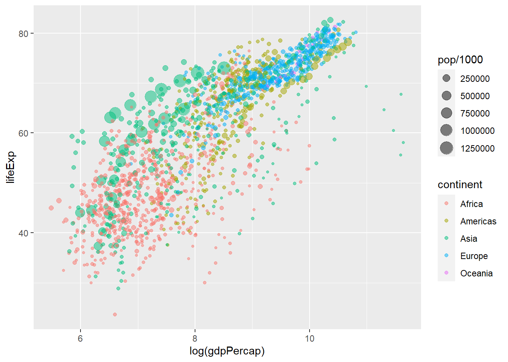
2.5.3 Fasetler
Veri setimizde kategorik değişkenler için ayrı ayrı grafikler (facet) oluşturabiliriz.
Örneğin
gapminderveri setinde her kıta için ayrı ayrı serpilme çizimlerini oluşturalım.
ggplot(gapminder,
aes(x = log(gdpPercap), y = lifeExp, size=pop/1000)) +
geom_point(alpha = 0.5) +
facet_grid(continent ~. )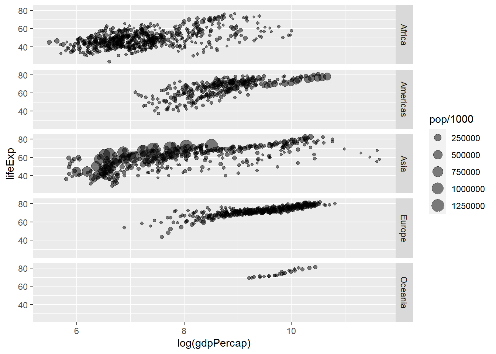
ggplot(gapminder,
aes(x = log(gdpPercap), y = lifeExp, size=pop/1000)) +
geom_point(alpha = 0.5) +
facet_grid(. ~ continent)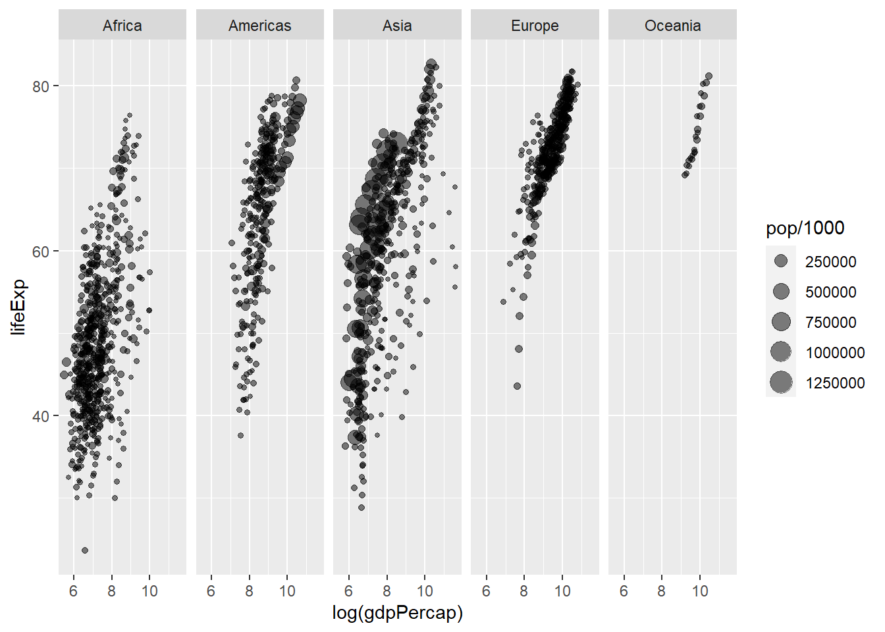
gapminder |> filter(year %in% c(1952, 2007)) |>
ggplot(aes(x = log(gdpPercap), y = lifeExp)) +
geom_point(alpha = 0.5) +
facet_grid(year ~ continent)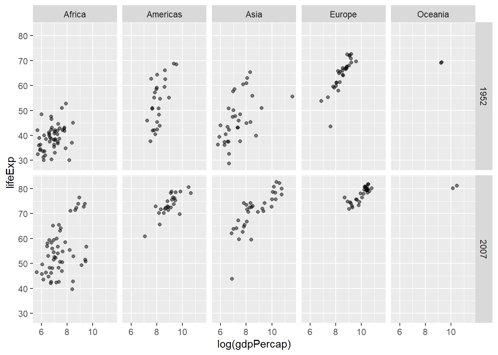
- Alternatif olarak
facet_wrap()fonksiyonunu kullanabiliriz:
ggplot(gapminder,
aes(x = log(gdpPercap), y = lifeExp)) +
geom_point(alpha = 0.5) +
facet_wrap(. ~ continent, ncol = 2)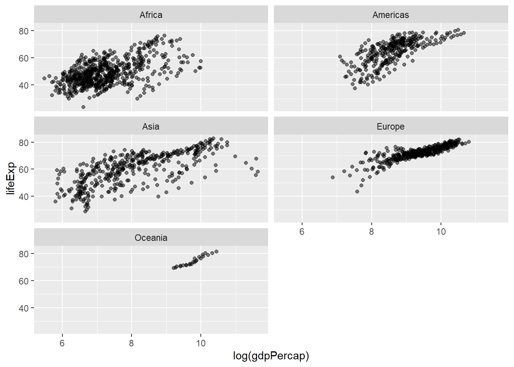
2.5.4 Eksenler, başlık, ve etiketlerin kontrolü
- Önce grafiğimizi oluşturalım:
# sadece 2007 yılı
g2007 <- gapminder |> filter(year==2007) |>
ggplot(aes(gdpPercap, lifeExp, size = pop, color = continent)) +
geom_point()
g2007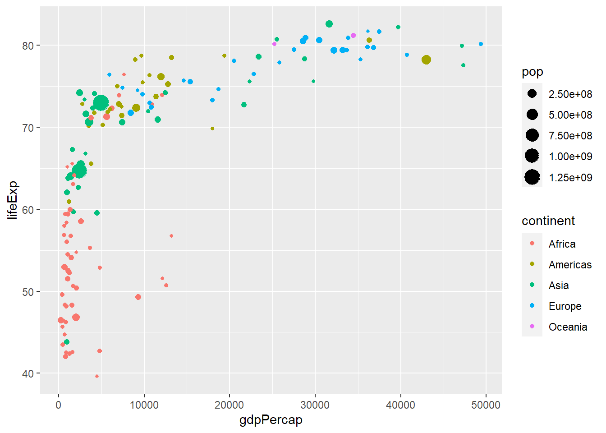
- Eksen başlıklarını değiştirelim:
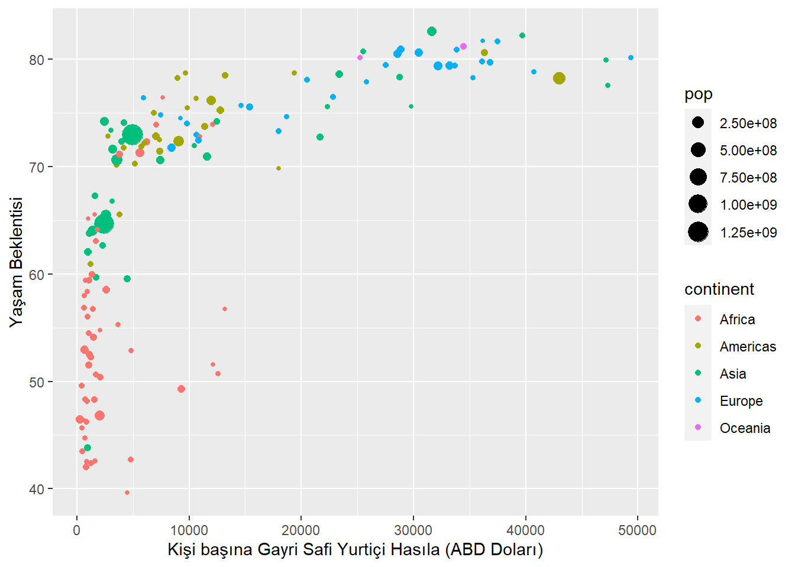
Aynı işlem
labs()fonksiyonu ile de yapılabilir.Başlık, alt başlık, ve dipnot ekleyelim:
g2007 +
labs(x = "Kişi başına Gayri Safi Yurtiçi Hasıla (ABD Doları)",
y = "Yaşam Beklentisi",
title = "2007",
subtitle = "Tüm ülkeler",
caption = "Kaynak: Gapminder project, https://www.gapminder.org/"
) 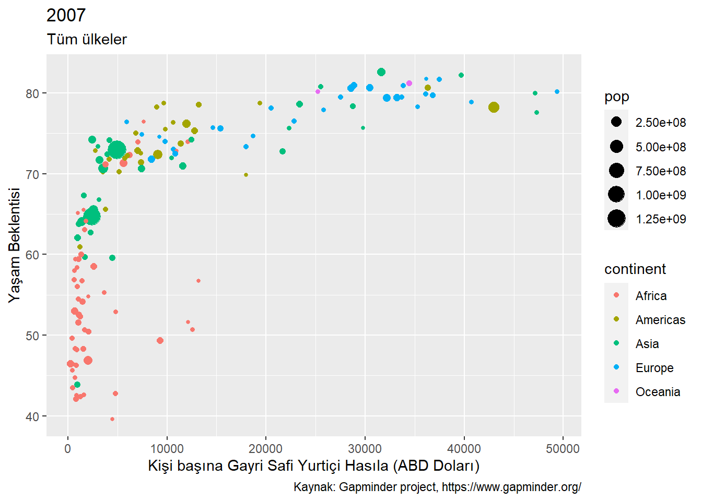
scale_x_*veyascale_y_*fonksiyonlarını kullanarak eksenlerin ölçü birimlerini değiştirmek mümkündür. Örneğin yukarıdaki grafikte kişi başına GDP’yi logaritmik skala ile göstermek istersekscale_x_log10()fonksiyonunu kullanabiliriz:
g2007 +
scale_x_log10() +
labs(x = "Kişi başına Gayri Safi Yurtiçi Hasıla (logaritmik skala)",
y = "Yaşam Beklentisi",
title = "2007",
subtitle = "Tüm ülkeler",
caption = "Kaynak: Gapminder project, https://www.gapminder.org/"
) 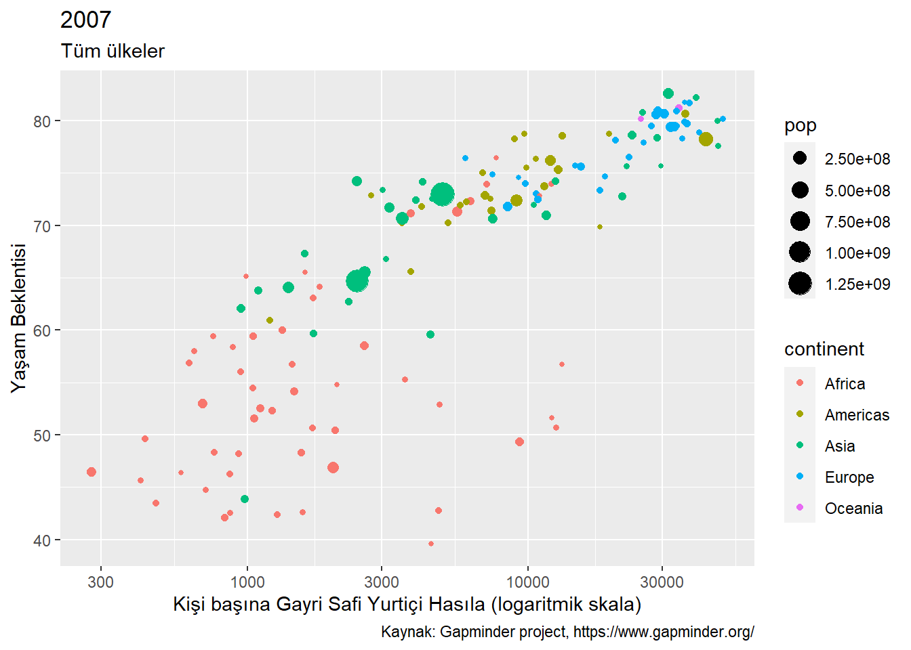
- Etiket başlıklarını değiştirelim:
g2007 +
scale_x_log10() +
labs(x = "Kişi başına Gayri Safi Yurtiçi Hasıla (logaritmik skala)",
y = "Yaşam Beklentisi",
color = "Kıta",
size = "Nüfus",
title = "2007",
subtitle = "Tüm ülkeler",
caption = "Kaynak: Gapminder project, https://www.gapminder.org/"
) 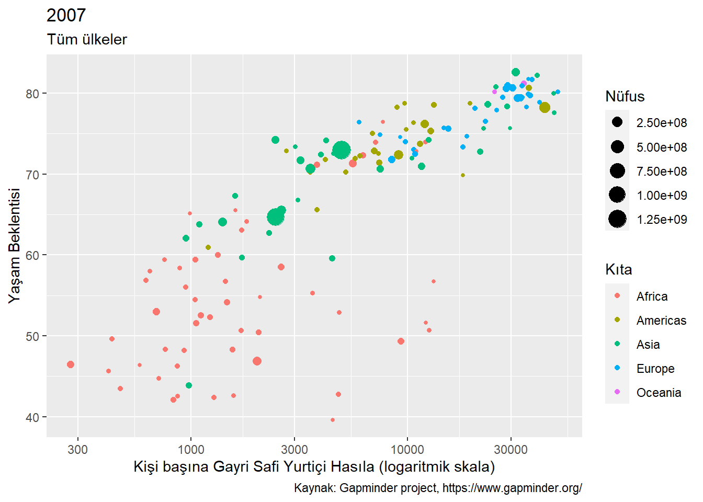
- Grafiği pdf ya da png formatında saklamak için manuel olarak RStudio Plots penceresinden Export seçilebilir. Alternatif olarak
ggsave()fonksiyonu kullanılabilir.
## Saving 7 x 5 in image## Saving 7 x 5 in image2.5.5 Dağılım Grafikleri
- Sürekli bir değişkenin dağılımı betimsel istatistiğin önemli bir parçasıdır. Verilerin daha iyi anlaşılmasında histogram, kutu çizimi, birikimli dağılım fonksiyonu gibi görsel araçlar çok faydalı olabilir.
2.5.6 Histogram: geom_histogram()
- Örnek: Önce yapay bir veri seti oluşturalım. Veriler 3 derse ilişkin notları göstersin.
set.seed(1)
n <- 200
notlar1 <- round(rnorm(n, mean = 50, sd = 10))
notlar2 <- round(rnorm(n, mean = 60, sd = 15))
notlar3 <- round(rnorm(n, mean = 70, sd = 12))
ders <- factor( rep(c("Ekonometri-1","Ekonometri-2","Makine Öğrenmesi"), each=n) )
not_verileri <- tibble(ders,
not = c(notlar1, notlar2, notlar3),
cinsiyet = sample(c("Kadın", "Erkek"), 3*n, replace = TRUE))
not_verileri <- filter(not_verileri, not<=100 & not>=0)
head(not_verileri)## # A tibble: 6 × 3
## ders not cinsiyet
## <fct> <dbl> <chr>
## 1 Ekonometri-1 44 Kadın
## 2 Ekonometri-1 52 Erkek
## 3 Ekonometri-1 42 Kadın
## 4 Ekonometri-1 66 Erkek
## 5 Ekonometri-1 53 Kadın
## 6 Ekonometri-1 42 Erkek## `stat_bin()` using `bins = 30`. Pick better value with `binwidth`.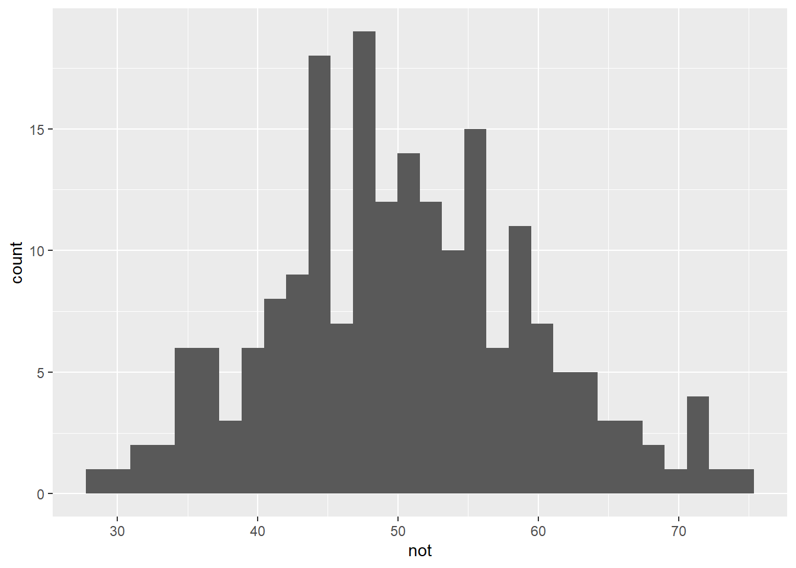
- Histogramın default değerleri pek göze hitap etmiyor, sınıflar birbiriyle kaynaşmış ve sınıf sayısı da optimal değil. Yeniden çizelim:
not_verileri |> filter(ders == "Ekonometri-1") |>
ggplot(mapping = aes(x = not)) +
geom_histogram(binwidth = 5, # sütun genişliği
color = "darkblue", # sütun sınırlarının rengi
fill = "lightblue" # sütun içinin rengi
) 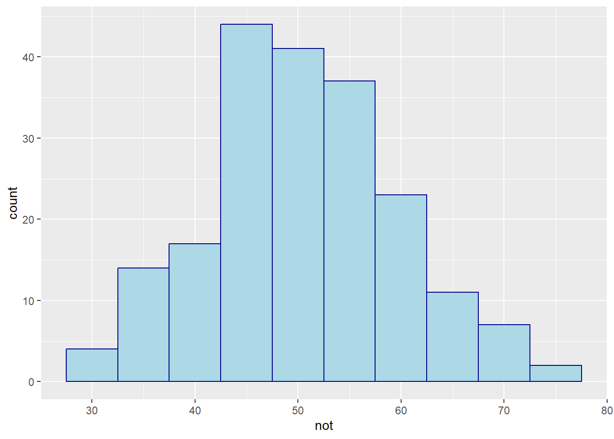
- Diğer dersler için de histogramları çizelim ve yan yana paneller oluşturalım:
ggplot(data = not_verileri) +
geom_histogram(mapping = aes(x = not),
binwidth = 10,
color = "darkblue",
fill = "lightblue"
) +
facet_wrap(~ ders)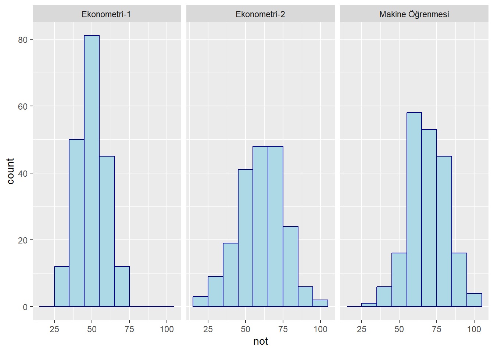 - Grupların histogramlarını aynı grafikte göster:
not_verileri |> ggplot(aes(x = not, fill = ders)) +
geom_histogram(binwidth=5, alpha=.5, position="identity")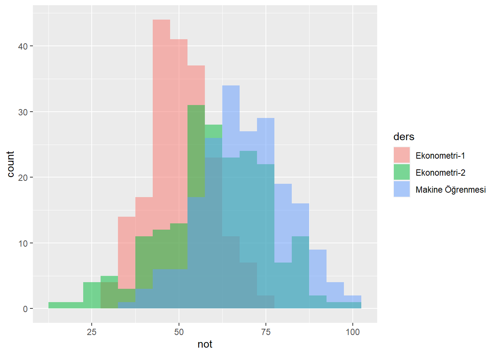
- Histogram üzerinde ortalama veya medyan notu bir çizgi ya da nokta ile gösterebiliriz.
not_ort <- not_verileri |> group_by(ders) |>
summarize(n = n(),
ortalama = mean(not),
medyan = median(not),
sd = sd(not),
se_ort = ortalama/sqrt(n),
p25 = quantile(not, 0.25),
p75 = quantile(not, 0.75)
)
not_ort## # A tibble: 3 × 8
## ders n ortalama medyan sd se_ort p25 p75
## <fct> <int> <dbl> <dbl> <dbl> <dbl> <dbl> <dbl>
## 1 Ekonometri-1 200 50.4 49.5 9.30 3.56 44 56
## 2 Ekonometri-2 200 60.6 60 15.2 4.28 52.8 71
## 3 Makine Öğrenmesi 199 69.3 69 12.4 4.91 61 77.5not_verileri |> filter(ders == "Ekonometri-1") |>
ggplot(mapping = aes(x = not)) +
geom_histogram(binwidth = 5, # sütun genişliği
color = "darkblue", # sütun sınırlarının rengi
fill = "lightblue" # sütun içinin rengi
) +
geom_vline(aes(xintercept = mean(not)), # dikey çizginin yeri=ortalama
linetype = "dashed", # çizgi tipi
color = "red", # çizgi rengi
size = 1 # çizgi büyüklüğü
) +
annotate(geom = "text", # geom türü
label = "Ortalama", # yazmak istediğimiz etiket/bilgi/yazı
x = 53.5, # x koordinatı
y = 43) # y koordinatı## Warning: Using `size` aesthetic for lines was deprecated in ggplot2 3.4.0.
## ℹ Please use `linewidth` instead.
## This warning is displayed once every 8 hours.
## Call `lifecycle::last_lifecycle_warnings()` to see where this warning was generated.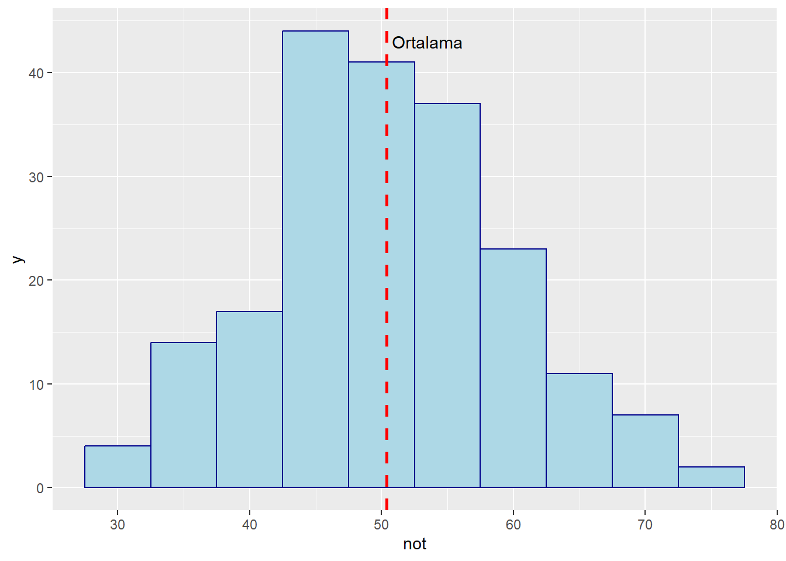
2.5.7 Yoğunluk: geom_density()
- Yoğunluk fonksiyonu düzleştirilmiş histogram gibi düşünülebilir. Örneğin,
not_verileri |> filter(ders == "Ekonometri-1") |>
ggplot(aes(x = not)) +
geom_histogram(aes(y=..density..), # histogramda y ekseninde yoğunluğu göster
bins = 12,
color = "black",
fill = "white") +
geom_density(aes(x = not)) ## Warning: The dot-dot notation (`..density..`) was deprecated in ggplot2 3.4.0.
## ℹ Please use `after_stat(density)` instead.
## This warning is displayed once every 8 hours.
## Call `lifecycle::last_lifecycle_warnings()` to see where this warning was generated.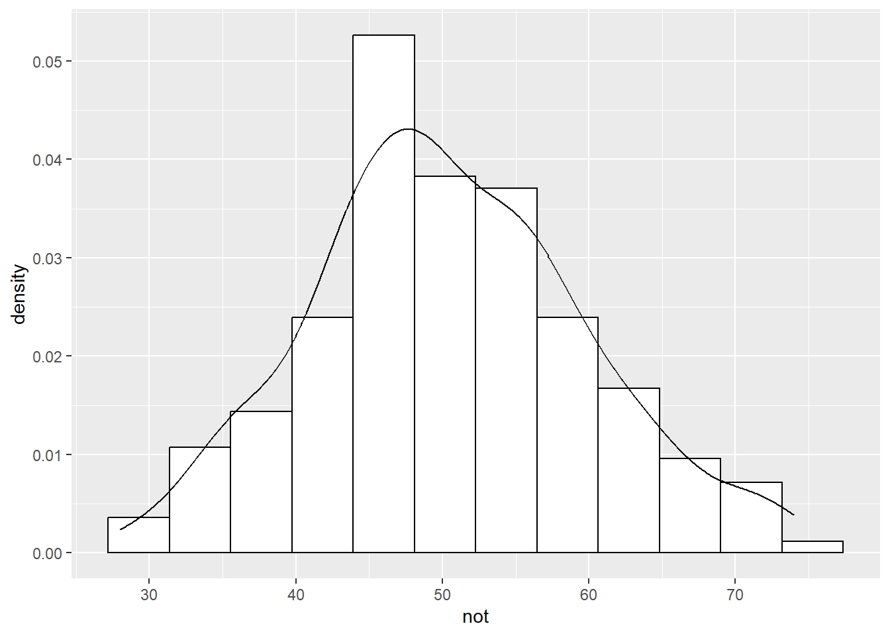
- Gruplar için yoğunluk fonksiyonunu aynı grafik üzerinde göster:
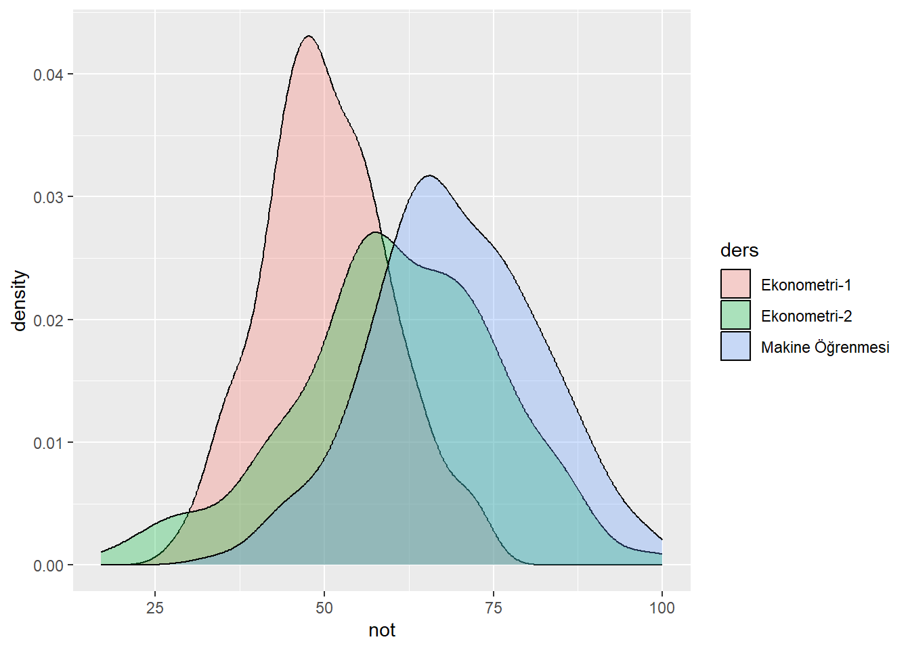
- Yukarıdaki grafiğe örneklem ortalamalarını her grup için ekleyelim. Bunun için yukarıda oluşturduğumuz
not_orttablosunugeom_vline()içinde kullanabiliriz.
not_verileri |> ggplot(aes(x = not, fill = ders)) +
geom_density(alpha = 0.3) +
geom_vline(data = not_ort, # özet istatistik tablosu
aes(xintercept = ortalama,
colour = ders
),
linetype="dashed",
size=1)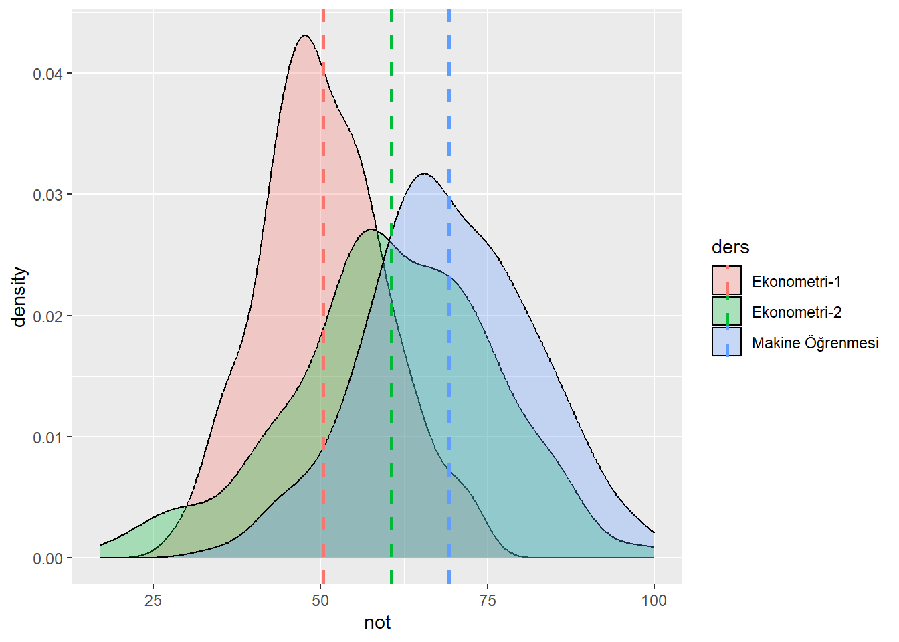
2.5.9 Keman grafiği: geom_violin()
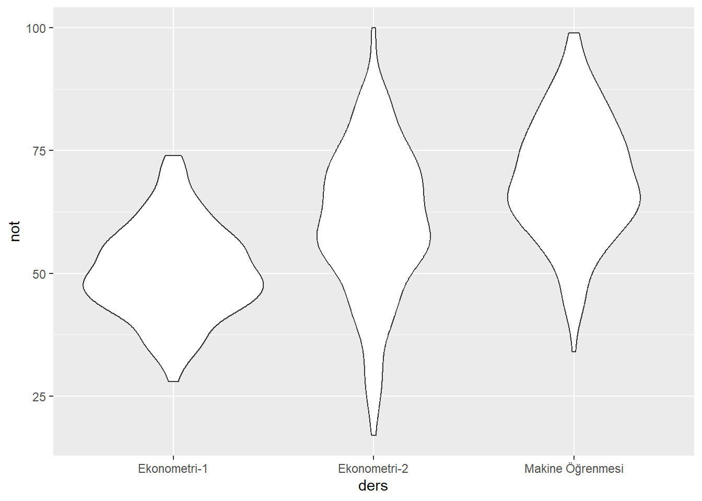
# kartilleri göster
not_verileri |>
ggplot(mapping = aes(x = ders, y = not)) +
geom_violin(draw_quantiles = c(0.25, 0.5, 0.75)) 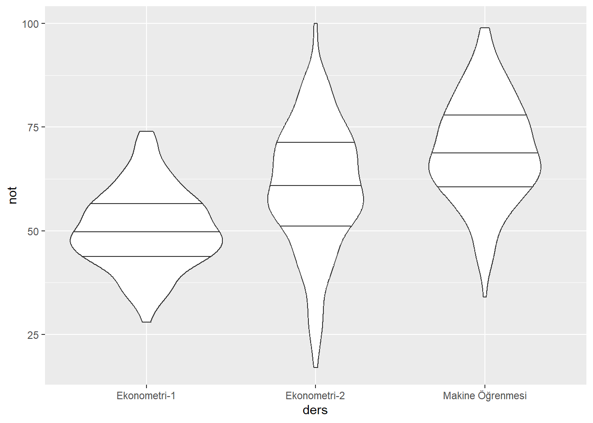
gapminder |>
ggplot(mapping = aes(x = factor(year), y = lifeExp)) +
geom_violin(draw_quantiles = c(0.5)) 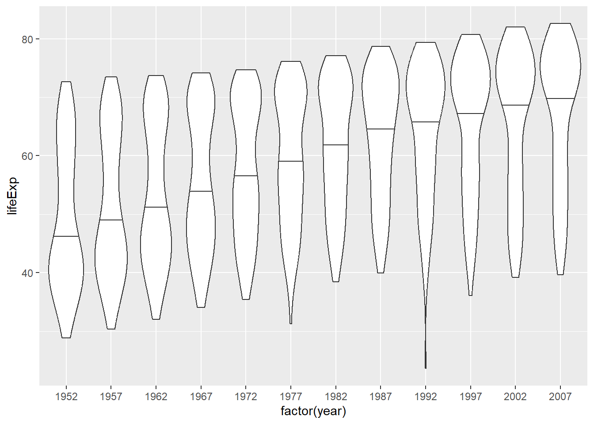
2.5.10 QQ Grafiği
Birikimli dağılım fonksiyonunu çizerek normal dağılımla karşılaştırmak isteyebiliriz. Bunun için
geom_qq()veyastat_qq()fonksiyonlarını kullanabiliriz.Örnek olarak 5 serbestlik dereceli bir t dağılımından rastgele örneklem çekelim ve grafiğini çizelim.
set.seed(54321)
data <- tibble(x = rt(400, df = 5))
data |> ggplot(aes(sample = x)) +
geom_qq() +
geom_qq_line()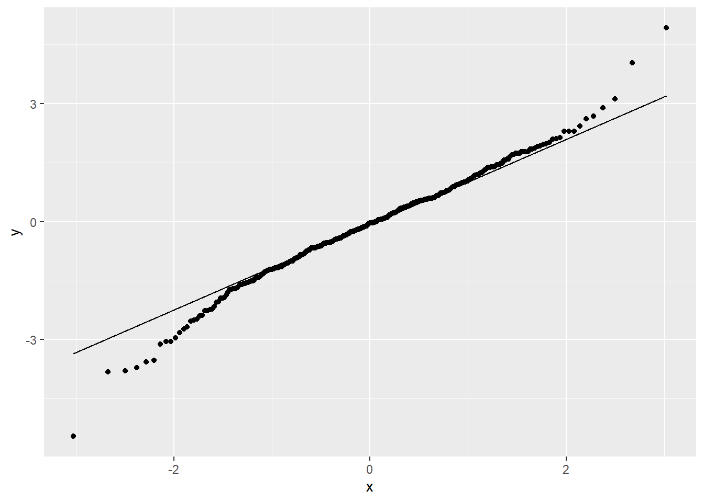
2.5.11 Bar plot
- Sütun grafiği (bar plot): örnek olarak notları derslere ve cinsiyete göre gruplayıp özet istatistiklerini hesaplayalım. Daha sonra grup ortalamalarını bar plot haline getirelim:
not_ort2 <- not_verileri |>
group_by(ders, cinsiyet) |>
summarize(ortalama = mean(not),
medyan = median(not),
p25 = quantile(not, 0.25),
p75 = quantile(not, 0.75)
)
not_ort2## # A tibble: 6 × 6
## # Groups: ders [3]
## ders cinsiyet ortalama medyan p25 p75
## <fct> <chr> <dbl> <dbl> <dbl> <dbl>
## 1 Ekonometri-1 Erkek 51.1 50 44 58
## 2 Ekonometri-1 Kadın 49.6 48 44 55
## 3 Ekonometri-2 Erkek 61.1 62 50 71
## 4 Ekonometri-2 Kadın 60.2 59 54 71
## 5 Makine Öğrenmesi Erkek 69.9 71 62 78
## 6 Makine Öğrenmesi Kadın 68.7 68 61 76.2not_ort2 |>
ggplot(aes(x = ders, y = ortalama, fill = cinsiyet)) +
geom_bar(stat = "identity", # istatistik hesaplama
position = position_dodge() # sütunları yan yana göster
)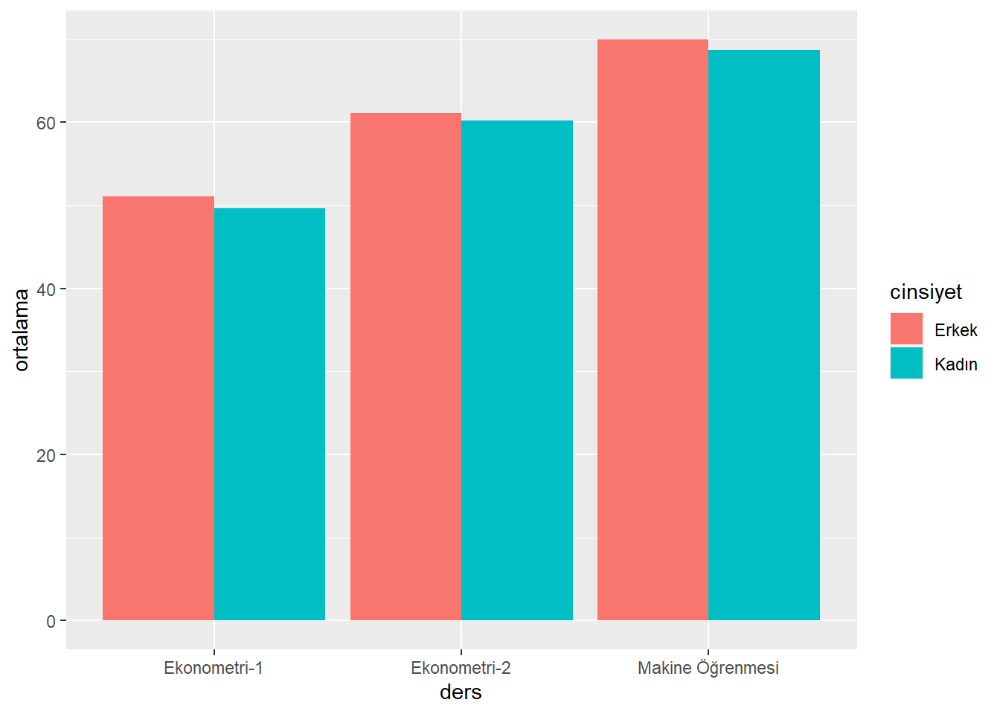
- Örnek:
gapminderveri setinde her kıtadaki ülke sayısını bar plot olarak göster:
gapminder |> group_by(continent) |>
summarize(n = n()) |>
ggplot(aes(x = continent, y = n)) +
geom_bar(stat = "identity",
position = position_dodge())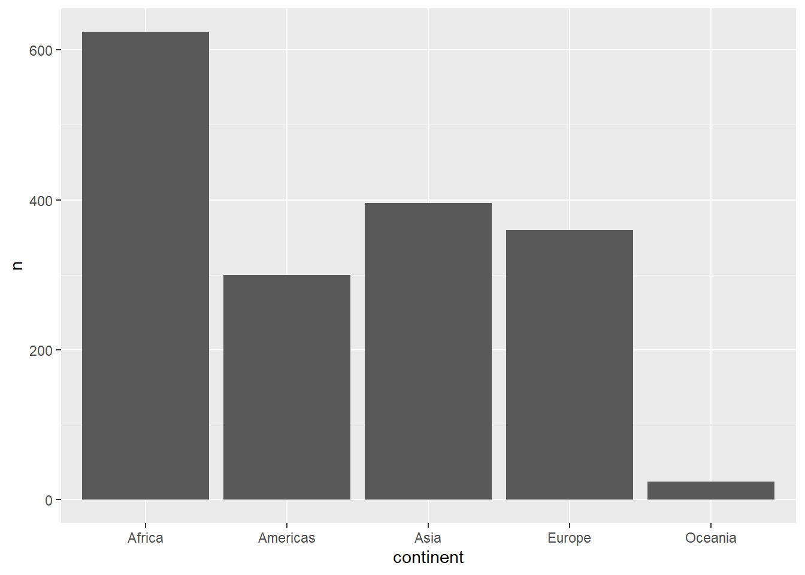
- Her grup için ortalama çevresinde %95 güven aralığını çizmek istersek
geom_pointrange()ya dageom_errorbar()fonksiyonlarını kullanabiliriz:
not_ort |> ggplot(aes(ders, # grup
ortalama, # istatistik
ymin = ortalama-1.96*se_ort, # alt sınır
ymax = ortalama+1.96*se_ort # üst sınır
)
) +
geom_pointrange()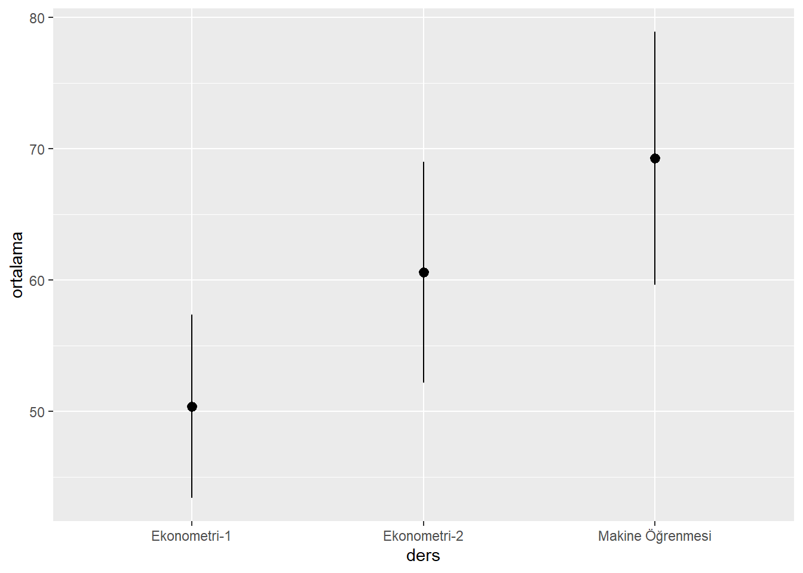
stat_summary()fonksiyonu ile medyan, minimum ve maksimum değerlerin gösterilmesi:
ggplot(data = not_verileri) +
stat_summary(
mapping = aes(x = ders, y = not),
fun.min = min,
fun.max = max,
fun = median
)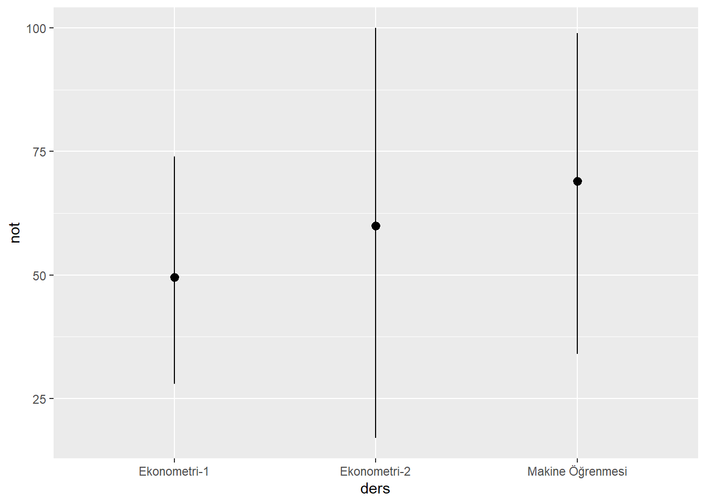
2.5.12 Çizgi ve Nokta grafiği
- Örnek: Türkiye’nin kişi başına GDP değerlerinin zaman serisi grafiğini çiz.
library(gapminder)
turkey <- gapminder |> filter(country=="Turkey")
ggplot(turkey, aes(x = year, y = gdpPercap)) +
geom_line() +
geom_point() +
xlab("") +
ylab("GDP per capita") +
ggtitle("Turkey")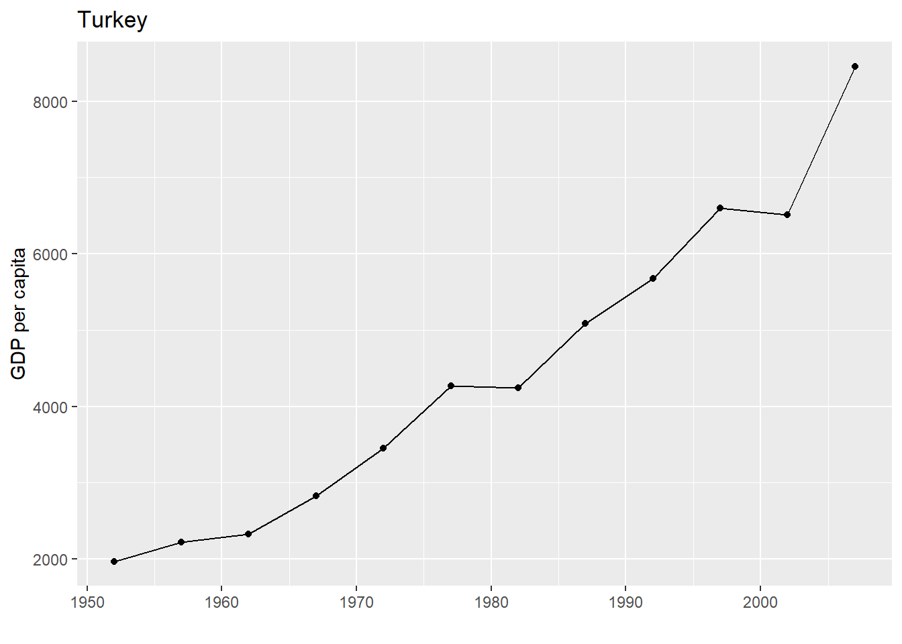
- Örnek: Düşük gelirli Avrupa ülkelerinde yaşam beklentisinin zaman serisi grafiğini çiz. Düşük gelir durumu: 2007 yılında gdpPercap<10000 ise düşük gelirli ülke; değilse yüksek gelirli ülke.
# verileri oluştur
europe <- gapminder |>
filter(continent == "Europe")
clist <- filter(europe, gdpPercap<10000 & year==2007)
lowincome_europe <- filter(europe, country %in% clist$country)
# grafiği çiz
ggplot(lowincome_europe, aes(x = year, y = lifeExp, color = country)) +
geom_line()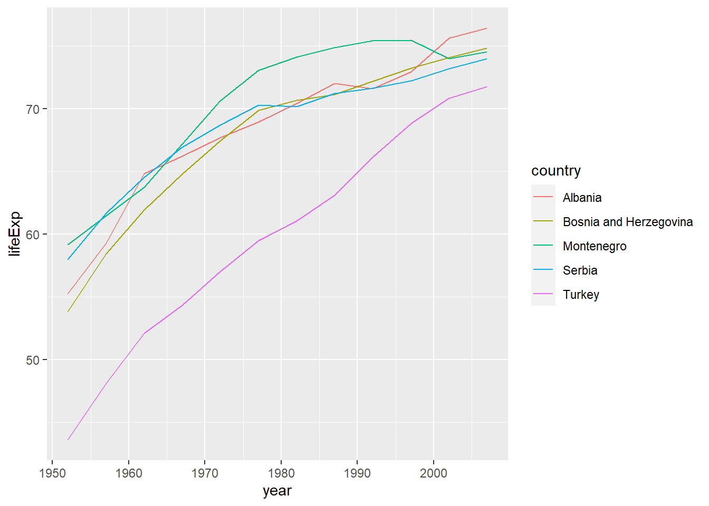
- Örnek: Avrupa’da 2007 yılındaki yaşam beklentisi küçükten büyüğe sıralayıp nokta grafiğini çiz.
# önce verileri oluştur
europe2007 <- gapminder |>
filter(year == 2007, continent == "Europe")
# grafiği çiz
ggplot(europe2007,
aes(x = lifeExp,
y = fct_reorder(country, lifeExp) # ülkeleri lifeEXp'e göre sıraya diz
)) +
geom_point() +
ylab("") + xlab("") +
ggtitle("2007 yılında Avrupa ülkelerinde yaşam beklentisi")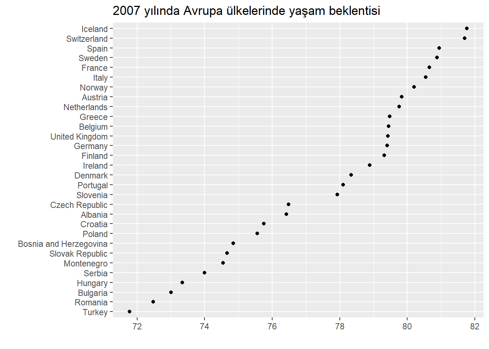
Alıştırma: yukarıdaki grafiğe 1952 yılının bilgisini ekleyerek bu dönemde yaşam beklentisinin nasıl değiştiğini görmek istiyorsunuz. Bu bilgiyi grafiğe nasıl eklersiniz?
- Örnek: Aşağıdaki veri setinin nokta+çizgi grafiğini çizelim.
df <- tibble(`yıl` = factor(c(2010, 2020, 2010, 2020)),
x = c(100, 150, 200, 160),
tip = factor(c("A", "A", "B", "B")))
df## # A tibble: 4 × 3
## yıl x tip
## <fct> <dbl> <fct>
## 1 2010 100 A
## 2 2020 150 A
## 3 2010 200 B
## 4 2020 160 B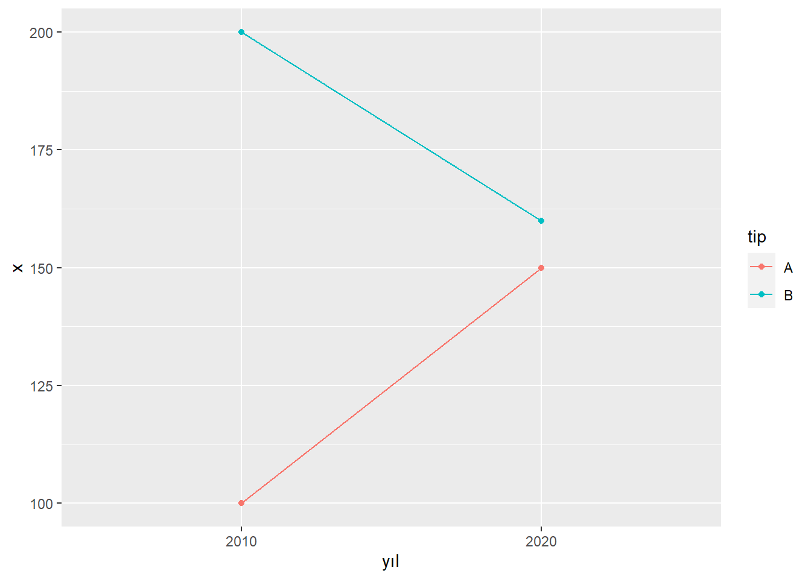
2.5.13 Temalar
ggplot2::theme()fonksiyonu ile grafiğimizin verilerle ilgili olmayan arkaplan, grid çizgileri, çerçeve çizgileri gibi özelliklerini değiştirebiliriz.Önceden tanımlanmış
theme_bw(),theme_classic()gibi temaları kullanabilirizÖrnek olarak yukarıda oluşturduğumuz
lowincome_europegrafiğini siyah-beyaz baskıya uygun hale getirelim:
ggplot(lowincome_europe,
aes(x = year,
y = lifeExp,
linetype = country # çizgi tipini ülkelere göre belirle
)) +
geom_line() +
theme_bw() + # siyah-beyaz temayı kullan
scale_x_continuous(breaks = seq(1952, 2007, 5)) + # x etiketlerini belirle
theme(axis.text.x = element_text(angle = 90, vjust = 0.5, hjust = 1)) + # yönünü dikey yap
xlab("")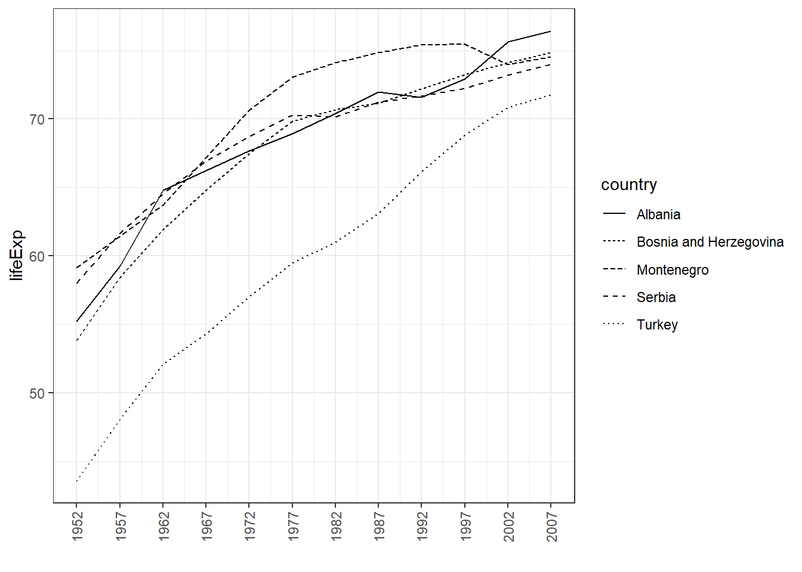
2.5.14 Interaktif grafik
İnteraktif serpilme çizimi için kullanabileceğimiz bir kütüphane {plotly}’dir.
Detaylar için bkz https://plotly.com/r/getting-started/.
##
## Attaching package: 'plotly'## The following object is masked from 'package:ggplot2':
##
## last_plot## The following object is masked from 'package:stats':
##
## filter## The following object is masked from 'package:graphics':
##
## layoutlibrary(gapminder) # veri seti
p <- gapminder |>
filter(year==2007) |>
ggplot( aes(gdpPercap, lifeExp, size = pop, color=continent)) +
geom_point() +
scale_x_log10() +
theme_bw()
ggplotly(p)İnteraktif kutu çizimleri:
R ile hemen hemen tüm grafikleri interaktif yapmak mümkündür. Detaylar için bkz https://www.r-graph-gallery.com/interactive-charts.
2.5.15 Harita çizimi
Rile jeokonumsal verilerin görselleştirilmesinde çeşitli araçlar mevcuttur.{sf}(simple features) paketi: https://github.com/r-spatial/sf.ggplot2fonksiyonlarıgeom_sf()vecoord_sf()bu paket ile uyumlu çalışır.Örnek olarak Türkiye’nin il düzeyinde bir haritasını çizmek istediğimizi düşünelim.
tr_harita_veriillerin sınırlarına ilişkin koordinat bilgisini içermektedir (geometrysütununda). İllerin isimlerinin yanı sırageometrysütunu altında il sınır bilgileri yer almaktadır. Bu noktada il düzeyinde boş haritayı çizebiliriz:
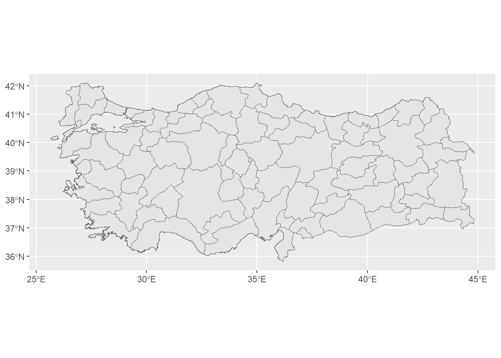
geom_sf()fonksiyonu veri setinde yer alangeometrybilgisini kullanarak il sınırlarını koordinat sistemi üzerinde yerleştirdi.İstenirse harita üzerinde başka geometrik şekiller ile katmanlar eklenebilir. Örneğin, bazı şehir merkezlerini nokta ile işaretleyelim. Bunun için önce şehirlerin eylem-boylam bilgisini içeren bir tablo oluşturalım:
tr_sehirler <- tribble(
~city, ~lat, ~lon,
"Istanbul", 41.0, 29.0,
"Ankara", 39.9, 32.8,
"İzmir", 38.4, 27.1,
"Bursa", 40.2, 29.1,
"Antalya", 36.9, 30.7,
"Konya", 37.9, 32.5
)# tr_sehirler içindeki şehirleri kırmızı nokta ile göster
ggplot(tr_harita_veri) +
geom_sf() +
geom_point(data = tr_sehirler,
mapping = aes(x = lon, y = lat),
colour = "red") +
geom_text(data = tr_sehirler,
mapping = aes(x = lon, y = lat, label = city),
nudge_y = -0.15) + # y koordinatında şehir isimlerini aşağıya kaydır
coord_sf()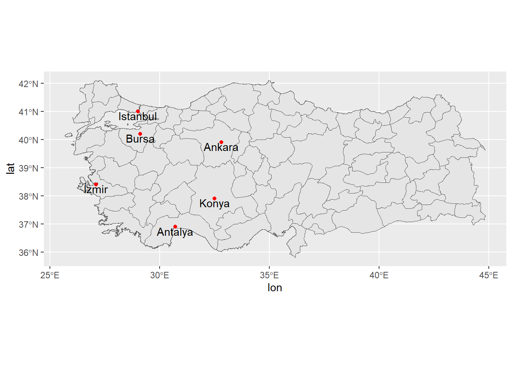
Başka bir versiyon:
# sadece başkenti göster
ggplot(tr_harita_veri) +
geom_sf(color = "black", fill = "lightblue") +
geom_point(aes(32.8, 39.9), color = "red") +
geom_text(aes(32.8, 40.2), label = "Ankara") +
coord_sf() +
xlab("Boylam") + ylab("Enlem") +
ggtitle("Türkiye") +
theme_minimal()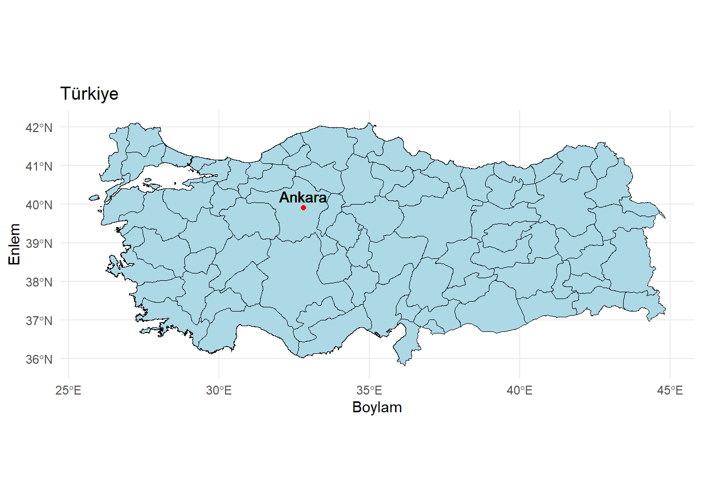
Harita üzerinde bölgelerin belirli bazı istatistiklerini renkler ve şekiller yardımıyla göstermek istersek bu bilgilerin bulunduğu veri setiyle geometri bilgisinin bulunduğu veri setini birleştirmemiz gerekir.
Örnek olarak bkz
tr_harita.R(R script klasöründe). Bu uygulamadatr_bolgesel_veridosyasında bulunan bazı değişkenler harita üzerinde gösterilmektedir.